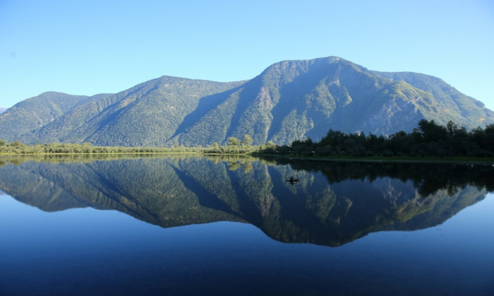
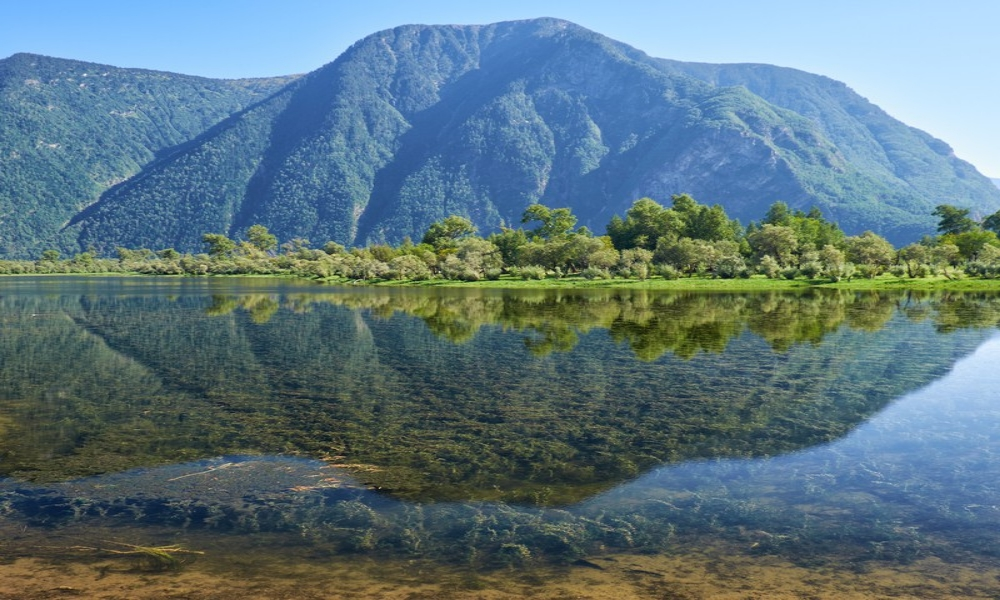
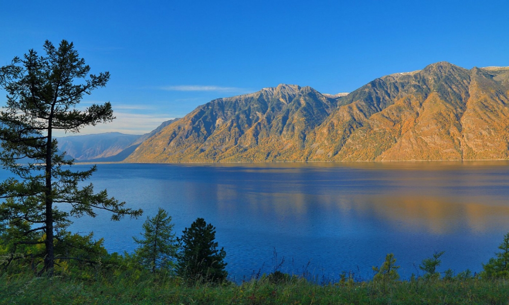

Складывание карт
👇 Прокрутите вниз, чтобы увидеть эффект.
Первая карточка!
Текст про карточку, с описанием.
Читать далее

Вторая!
Текст про карточку, с описанием.
Читать далее

Третья!
Текст про карточку, с описанием.
Читать далее
И последняя четвёртая!
Текст про карточку, с описанием.
Читать далее
